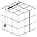
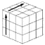
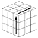
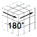
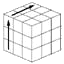
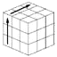
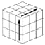
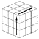

【prologue】
While walking at 6.5km / h on a treadmill slope, using an environment where cognitive ability and thinking ability decline,
trial and error dozens of procedures that do not reduce solve efficiency.
We have found a method that can achieve reasonable results by balancing simplification and efficiency even in situations where judgment cannot be expected .
When you're tired and sleepy, or when you're lacking in judgment, even this inertial solve can be done in about 90 moves.
(I don't use the left and right moves, but remember the U palm used to pick up the edge.) The number of mistakes is drastically reduced, there is no stagnation or rework, and the solve is about 90 seconds, which is super stable.
Align through the following 6 steps (some skips exist moderately each time).
(1) Creating a one-sided cross
In the middle layer, arrange two horizontal same colors on three sides, and finally
raise four white edge posts vertically on the white side .
(2) Monogusa consecutive return to the
yellow side Corner post with two from whitening F2L x 4 times
・ If the corner post has a
white top surface ,・ Depending on the top surface color of the edge cube at the position of
Keima, use the Keima accelerator and Keima brake properly to slot in.
However, if you defeat it and notice the unique Keima position pattern below, it is faster to defeat the post.
・ Other than white on the top surface
・ If the color is the same, call
the edge cube next to the corner post・ If the color is different, move the edge cube to the position of Keima with the corner and
slot in each.
Keima Accelerator Case: Due to imaging, the
same edge cube as the two colors of the white posts at each corner, which expresses the yellow surface as a white
surface, is placed at the position of Keima on the upper surface that matches the color of the center cube .
When raising white or Keima,
don't forget to rotate it sideways in advance so that the slots that can be broken come to the rear .
Determine the sideways tilting direction of
the edge slot
(“R” in the above example) so that the corner post can be aligned with the top color of the edge cube at Keima's position , and tilt it to accept the lateral rotation of the corner slot.
(It was If the first red color in the upper left circle painting, attention in the upper part of [R] [R '] rotation be reversed.
Each, knight accelerator, referred to as a knight brake, and joseki)
then , Return the edge slot vertically, rotate the upper layer 90 ° to reach the vertical rotation of the edge slot,
and after rotating the corner slot -90 ° back, return it vertically with the white facing down.
Don't forget to put back any slots that were affected by the edge rotation.
In the 4th slot-in, it is also effective to mix it well with "removable with children".
If you feel a decline in " Monogusa Renki ", there is also a means called < F2L for beginners >.
(3) Corner exchange 4 Determine the position of the corner.
If there are two corner posts with the same color surface on one side, they are rotated to the surface of that color and the adjacent exchange is performed.
Adjacent exchange 80%, diagonal exchange (Kurukuru move) 10%, position of upper 4 corners confirmed. There is also no operation
(4) Creating a fish-shaped cross (basically the same as the simple solution)
After determining the positions of the four corners, the rotation proceeds along the shape of the yellow surface.
(Horizontal bar, twirl move at 3:06, then twirl palm ⇒ with fish shape)
Depending on the starting position,
・ Left-handed "shoulder to palm (cross side, butterfly, turtle front)" When
, left turn only "from the waist palm (KameteHiraki)" and
- the final stage of the left and right turn there is a "yellow Mixed Palm".
↓ ↓ ↓
Point → Horizontal bar → 3 o'clock → 6 o'clock → Cross (corner exchange) ⇒ Fish-shaped cross
↓ → → → ↑ ↓ → Turtle, butterfly, cross ⇒ Fish-shaped cross
↓ ↓
Point → Horizontal bar → 3 o'clock ⇒ Yellow On one side, in
most cases, it will be a twirl palm after the next three courses of twirl move.
・ Dot-bar-3-6 (or diagonal move omitted-
bar- 3-6)・ Bar-6
・3-6
(5) Monogusa Goldfish
Evolve the yellow-faced fish shape into a Goal Fish fish shape that includes the side surface as shown in the figure below.
Basically, edge A ' and edge B' evolve only on one or both of the pick Palm.
Fish upper horizontal three are surface without yellow ( 'AA head edge) A' color 'C to take the facing
pickup rotation (Up)
, ( AA' ) of the facing ( 'BB head edge) B' color the 'C pick rotated to pick up from the face (Up)
if two edges are in mutual face-to-face rather than the left and right (rear comrade), cross exchange (Hp)
when from-yellow one aspect, three of the same color facing CC' from (Up)
Go to the goal at once if you do not have the same color, go to 4) after the twirl palm
(6)
Go to the goal at once with Kuru Kuru Palm From the position of the arrow ⇩ , set one left and right Kuru Kuru Palm.
In the previous step, the color of one of the fish's heads was the same as the corner cube, and the tails facing each other were also
the same color as the head corners. 'A'B'C the color of there was a corner with three,
skip the PLL stage, CC' in front of the face of, the left and right rotation either of the procedure,
exhilaration to a stretch goal.
Twirl palm (left hand): LUL'ULU2L'right turn (Xp-a)
(right hand) R'U'RU'R'U'2R left turn (Xp-b)

￫
￫
￫
￫
￫
￫
￫
￫
￫
￫
￫
￫
Turn clockwise from the position of the arrow Turn counterclockwise from the position of the arrow
In addition, the actual result is the appearance balance of 90% of Kuru Kuru Palm and 10% of H Palm in the final turn.
[Video] Finish with Kuru Kuru Palm! [Reference] 5 rotation procedures to memorize Twirl Move: R'U'F' UFR
It is also used as a diagonal exchange on the top surface.
￫
￫
￫
￫
￫
Twirl Palm: LUL'UL U2 L' 右廻し（Xp-a）
: R' U' R U' R' U' 2R 左廻し (Xp-b)
→
→
→
→
→
→
→
→
→
→
→
→
開始位置によって、左廻し専用の「肩からパーム」「腰からパーム」
そして最終段階の左右廻し「黄混血パーム」があり、すべてクルクルパームである。
隣接交換: L R' U' R U L' U' R' U R
隣接２個のコーナー交換が必要になっていれば、ここを右側に置いて次で確定する。
→
→
→
→
→
→
→
→
→
十字交換: M2 U M2 U2 M2 U M2 (Hp)
奥のエッジお迎えパームとして使われる。
→
→
→
→
→
→ 3-edge rotation movement: M2 U'M' U2 MU' M2(Right pick up) (Up-b)
: M2 UM'U2 MU M2 (Left
pick-up ) (Up-a) Mainly used as a left and right edge pick-up palm.
￫
￫
￫
￫
￫
￫
￫
￫
￫
￫
￫
￫
[Case] Scramble example and Monogusa Solve (85 moves)
* Scramble 17 L'R2 U2 F2 U2 F2 D'R2 D'FU'LD'RD' F'L
(Automatic analysis also supports symbol string correction input)
(1) Create a white cross on the upper layer
Priority is given to horizontal IT, and orange is left as it is, blue is horizontal, and red is aligned. Prepare green in the order of raising blue and raising orange.
** R U2 BL'D F2
(2) Align the upper and middle layers at the same time
Change the yellow side to the top and give priority to efficient IT.
・ With the bottom layer facing up, slot in the
IT-enabled blue-orange post. Start with the completed IT-completed blue-orange 2 post.
X2 FU'F'
・ Move the blue-red edge post next to the corner post, and start with the blue-red post
where the colors are immediately aligned on the upper surface to be slotted in .
F'U2 FR U'2 R'
-Rotate the red-green edge post with Keima accelerator so that the
red-green corner post that is slotted in is white on the top, and insert the red-green edge post at Keima position by defeating the joseki accelerator.
UB'U2 B U'2 B'UBU'B'U B2 U'B'
・ Use the Keima brake to set the
green-orange post, turn the green-orange corner post to white on the top, move the green-orange edge post to the Keima position, and push down the joseki brake.
UL U2 L'ULUL' ULU' L'
(3) Make the upper surface a yellow fish-shaped cloth ・ Correct the position by exchanging the upper 4 corners. Since the positions of the
4 corners are shifted by the X type, align them with one round and round move.
R'U'F' UFR
・ Move from 3 o'clock to 6 o'clock The
yellow on the upper surface has a pattern of 3 o'clock, so make a fish shape with two regular moves.
R'U'F' UFRF'U'L' ULF
(4) Make the fish into a "Goal Fish" format
Edge Pick-up Palm 2 times (red and green) to make a reach fish type.
Y M2 UM'U2 MU M2 Y2 M2 U'M' U2 MU' M2
(5) Go to the goal at once
with Kuru Kuru Palm Complete the yellow surface with Kuru Kuru Palm from the yellow mixed race position.
ULUL'UL U2 L'U
Reference: Rotation symbols and 3D Rubik's Cube results
() ()
Scramble A: L'R2 U2 F2 U2 F2 D'R2 D'FU'LD'RD' F'L
Scramble B: R'U' FL F2 L2 B2 R F2 R2 F2 R'B'R'DU' F2 U2 RF U2 B'R' U'F


 ￫
￫
￫
￫ ￫
￫
 ￫
￫ ￫
￫
￫
￫
 ￫
￫ ￫
￫
 →
→  ￫
￫